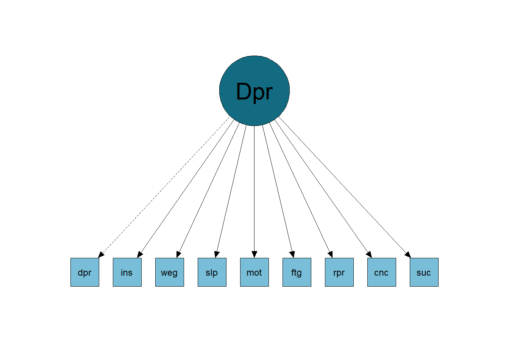
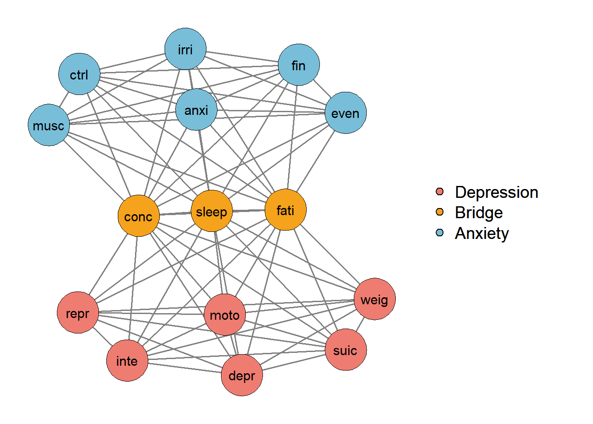
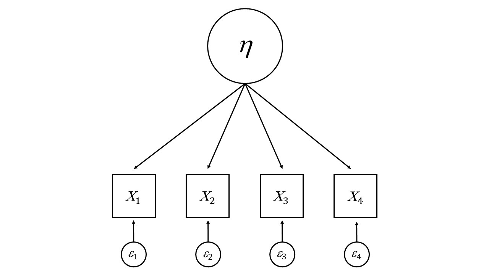

3 Theory of Latent Variables in Psychometrics
3.1 The Importance of Psychometrics
Psychometrics, a field within psychology, focuses on quantifying and measuring mental attributes, behaviors, performance, and emotions. Despite significant advancements in psychometric modeling over the past centuries, its integration into conventional psychological testing remains limited. This is very concerning, given that measurement problems abound in human research (Cronbach & Meehl, 1955; Messick, 1989; Borsboom et. al., 2004). Scholars argue that applying psychometric models to formalize psychological theory holds promise for addressing these challenges (Borsboom, 2006). However, many psychologists continue to rely on traditional psychometric methods, such as internal consistency coefficients and principal component analyses, without much deviation from past practices. Consequently, the interpretation of psychological test scores often lacks rigor, highlighting the disconnect between psychometrics and psychology (Borsboom, 2006).
3.2 Misunderstandings in Psychometric Practice
Misunderstandings are prevalent in the field of psychometrics. For instance, many studies delve into the structure of individual differences using latent variable theory but employ Principal Component Analysis (PCA) for data analysis. However, PCA does not align with latent variable theory. Thus, extracting a principal component structure alone does not shed light on its correspondence with a supposed latent variable structure. PCA serves as a data reduction technique (Bartholomew, 2004), which, in itself, isn’t problematic as long as interpretations remain confined to principal components, which are essentially weighted sum scores.
Another example is the interpretation of group differences through observed scores. The interpretation of differences between groups regarding psychological attributes depends on measurement invariance (or measurement equivalence) between the groups being compared. There are several psychometric models and associated techniques to gain some control over this problem (Mellenbergh, 1989; Meredith, 1993; Millsap & Everson, 1993). However, almost no one cares about this, whether in Brazil or abroad, people simply evaluate the observed scores — without testing the invariance of the measurement models that relate these scores to psychological attributes. If you look at, for example, some of the most influential studies on group differences in intelligence, you rarely see invariance analyses. Consider for example the work of Herrnstein and Murray (1994) and Lynn and Vanhanen (2002). They infer differences in intelligence levels between groups from observed differences in IQ (by race and nationality) without even having performed a single test for invariance.
3.3 Obstacles to the Psychometric Revolution
Borsboom (2006) highlights a significant issue with psychometric models: they often challenge commonly accepted assumptions, such as measurement invariance. This leads researchers into fundamental questions about the structure of the phenomena they study and its relationship to observable data. Developing theories in this context is no simple task, potentially placing researchers in complex situations. Despite the importance of these inquiries in any scientific field, they aren’t widely embraced in psychology. Consequently, even if researchers can provide compelling models for their observations, publishing such results proves challenging, as many journal editors and reviewers lack familiarity with psychometric models. Additionally, the perceived complexity of psychometrics exacerbates this issue. Compounding matters are the prevailing research standards in psychology, which demand that scientific articles remain accessible, despite the inherently intricate nature of the subject matter – human behavior and its underlying mental processes.
3.4 What are Constructs and Latent Variables
The notion of what a construct is and how to use it is fundamental for carrying out theories and research in psychology and related areas. Constructs are defined in empirical studies, and findings are interpreted in terms of the construct. What, then, would be a construct?
A construct is a concept that has three characteristics (Cronbach & Meehl, 1955): (i) it is not defined by a single observable referent (for example, 1 item on a scale); (ii) cannot be observed directly; and (iii) its observable referents are not fully inclusive. A latent variable is one (but not the only) statistical tool for studying constructs, and is commonly used in statistical analyzes to evaluate the relationship between constructs and their indicators (Spearman, 1904). A construct is operationally defined in terms of a number of items or indirect indicators, which are taken as an empirical analogue of a construct (Edwards & Bagozzi, 2000). These indicators are also called observed variables, which can be items in a self-report measure, interview, observations, or other means (DeVellis, 1991; Lord & Novick, 1968; Messick, 1995).
The reflective approach to latent variables is used by most methods in psychometrics that deal with measurement issues, often used in areas such as personality (John, 2021), well-being (Diener et al., 2010), criminology (Pechorro et al ., 2021), and others. The reflective approach is based on several assumptions, one of which is critical to its validity. It postulates a causal relationship between the latent variable and its indicators. This means that the variance and covariance in the indicators are dependent on changes in the latent variable (Bollen, 1989).
3.5 Ways to Represent a Construct
Usually, when running an Exploratory of Confirmatory Factor Analysis, we use the common factor model. This model sees the covariance between observable variables as a reflection of the influence of one or more factors and also a variance that is not explained. This would be different from network analysis, which allows covariance between items to have a cause between them. In other words, the psychometric model of factor analysis generally believes that item covariance occurs only because there is a latent factor that explains it. This is a very important assumption to keep in mind, as perhaps your construct does not fit the common factor model, but rather a network analysis. I will explain with an example given by Borsboom and Cramer (2013).
Below, we see the common factor model (Figure 3.1) of an instrument that measures major depression. In it, items measure aspects such as: feeling depressed, insomnia, weight gain, motor problems, fatigue, concentration problems, etc. We see from the image that the variation in scores on the items has a common cause, depression (that is, the higher the person’s level of depression, the more they report having these symptoms).
However, we can think that some items have relationships with each other that are not just due to depression. An example of this is the cause of concentration problems and its relationship with other symptoms. People who have problems sleeping become fatigued and, therefore, have problems concentrating (problems sleeping → fatigue → concentration problems). In other words, it is possible to infer a causal relationship between one observable variable and another, which breaks with the common factorial model assumption of local independence. A possible representation of this model is in the image below (Figure 3.2), where the items have causal relationships with each other.

So how do I know if my construct follows the common factor model or is more like network analysis? Well, often by theory! I know that researchers for a long time only cared about statistics to guide everything, but it is important for us to think about our constructs theoretically again and then test the theory empirically. However, there are also statistics that help verify this! But we’ll see that in the next chapter.
3.6 The Platonic Relationship of Cause and Effect in Psychological Measures
The validity of psychometric models depends on the validity of the causal assumptions they make, which are generally implicit to the user. Psychological tests (e.g., self-report questionnaires) are typically constructed to measure constructs, while the responses observed in such tests are believed to reflect the latent variable underlying them (Van Bork et al., 2017). For example, a person’s self-esteem is not observed directly, but we assume that it can be measured through items on an instrument. This line of thinking is the basis of the reflective approach, as represented by Figure 3.3. The reflective approach is applied to most psychometric models, such as classical test theory (Lord & Novick, 1968), the common factor model (Bartholomew, 1995; Speaman, 1904), item response theory models (Hambleton et al. al., 1991), latent class and latent profile analysis (B. O. Muthén & L. K. Muthén, 2000; Obersky, 2016), mixture models (Loken & Molenaar, 2008), latent growth models (Meredith & Tisak, 1990), reliability (Nunnally, 1978) and others, all crucial aspects of instrument development and evaluation.

Causal language is common across a wide range of research areas (Pearl, 2009) and has permeated the definition of reflective measures in psychometric literature. For example, measurement error is often characterized as part of an observed variable that is not “explained” by the construct (or true score; Lord & Novick, 1968; Nunnally, 1978). Furthermore, other authors clearly state the direction of causality from the construct to its indicators (DeVellis, 1991; Long, 1983). However, some authors defend the descriptivist (or formative) approach, which understands latent variables as a parsimonious summary of the data and not the underlying cause of the indicators (Jonas & Markon, 2016; Van Bork et al., 2017). The difference between the causal and descriptive approaches is that the first can be seen as a representation of a real-world phenomenon, while the second does not include a conceptual interpretation and only describes statistical dependencies between indicators (Moneta & Russo, 2014; Van Bork and others, 2017). Causal interpretation is important in many settings (Van Bork et al., 2017): (1) in research, establishing causal relationships is often aligned with the primary goal of explaining correlations between multiple indicators, rather than just summarizing them. them.; (2) a causal interpretation of the construct legitimizes the reflective approach and its shared variance rather than other models that take into account the unique variance of indicators, such as the network model (Borsboom & Cramer, 2013); (3) the causal interpretation resonates with the assumption of local independence (i.e., covariation between indicators disappears when conditioned on their common cause).
However, the simple use of causal language does not necessarily imply that the variables actually have causal relationships, this is an empirical question. To incorporate causality, one must adhere to the principles of causality from the philosophy of science within the psychological, social, and behavioral literature (Asher, 1983; Bagozzi, 1980; Bollen, 1989; Cook & Campbell, 1979; Heise, 1975; James et al. al., 1982). To see ways to test the causal structure of your instrument, see the article by Franco et al., (2023).
3.7 References
Asher, H. B. (1983). Causal modeling. Sage.
Bagozzi, R. P. (1980). Causal models in marketing. Wiley.
Bartholomew, D. J. (1995). Spearman and the origin and development of factor analysis. British Journal of Mathematical and Statistical Psychology, 48(2), 211-220. https://doi.org/10.1111/j.2044-8317.1995.tb01060.x
Bartholomew, D.J. (2004). Measuring intelligence: Facts and fallacies. Cambridge University Press.
Borsboom, D. (2006). The attack of the psychometricians. Psychometrika, 71(3), 425-440. https://doi.org/10.1007/s11336-006-1447-6
Borsboom, D., & Cramer, A. O. (2013). Network analysis: an integrative approach to the structure of psychopathology. Annual review of clinical psychology, 9, 91-121. https://doi.org/10.1146/annurev-clinpsy-050212-185608
Borsboom, D., Mellenbergh, G.J., & Van Heerden, J. (2004). The concept of validity. Psychological Review, 111, 1061–1071. https://doi.org/10.1037/0033-295X.111.4.1061
Cronbach, L.J., & Meehl, P.E. (1955). Construct validity in psychological tests. Psychological Bulletin, 52, 281–302. https://doi.org/10.1037/h0040957
DeVellis, R. F., & Thorpe, C. T. (2021). Scale development: Theory and applications. Sage publications.
Diener, E., Wirtz, D., Tov, W., Kim-Prieto, C., Choi, D. W., Oishi, S., & Biswas-Diener, R. (2010). New well-being measures: Short scales to assess flourishing and positive and negative feelings. Social indicators research, 97, 143-156. https://doi.org/10.1007/s11205-009-9493-y
Franco, V. R., Bastos, R. V., & Jiménez, M. (2023, June). Tetrad Fit Index for Factor Analysis Models. Paper presented at Virtual MathPsych/ICCM 2023. Via mathpsych.org/presentation/1297.
Hambleton, R. K., Swaminathan, H. and Rogers, H. J. (1991) Fundamentals of Item Response Theory. Sage
Harman, H. H. (1976). Modem factor analysis (3rd ed.). University of Chicago Press.
Heise, D. R. (1975). Causal analysis. Wiley.
Herrnstein, R.J., & Murray, C. (1994). The Bell curve. The Free Press.
James, L. R., Mulaik, S. A., & Brett, J. M. (1982). Causal analysis: Assumptions, models and data. Sage.
John, O. P. (2021). History, measurement, and conceptual elaboration of the Big‑Five trait taxonomy: The paradigm matures. In O. P. John & R. W. Robins (Eds.), Handbook of personality: Theory and research (pp. 35–82). The Guilford Press.
Jonas, K. G., & Markon, K. E. (2016). A descriptivist approach to trait conceptualization and inference. Psychological Review, 123(1), 90.
Kim, J. O., & Mueller, C. W. (1978). Factor analysis. Sage.
Loken & Molenaar (2008). Categories or Continua? The Correspondence Between Mixture Models and Factor Models. In G. R. Hancock & K. M. Samuelsen (Eds), Advances in Latent Variable Mixture Models. (pp. 277 - 298).
Long, J. S. (1983). Confirmatory factor analysis: A preface to LISREL. Sage.
Lord, F. M., & Novick, M. R. (1968). Statistical theories of mental test scores. Addison-Wesley.
Lynn, R., & Vanhanen, T. (2002). IQ and the wealth of nations. Praeger.
McDonald, R. P. (2013). Test theory: A unified treatment. Psychology Press.
Mellenbergh, G.J. (1989). Item bias and item response theory. International Journal of Educational Research, 13, 127–143. https://doi.org/10.1016/0883-0355(89)90002-5
Meredith, W. (1993). Measurement invariance, factor analysis, and factorial invariance. Psychometrika, 58, 525–543. https://doi.org/10.1007/BF02294825
Meredith, W., & Tisak, J. (1990). Latent curve analysis. Psychometrika, 55, 107-122. https://doi.org/10.1007/BF02294746
Messick, S. (1989). Validity. In R.L. Linn (Ed.), Educational measurement (pp. 13–103). American Council on Education and National Council on Measurement in Education.
Messick, S. (1995). Validity of psychological assessment: Validation of inferences from persons’ responses and performances as scientific inquiry into score meaning. American Psychologist, 50(9), 741-749. https://doi.org/10.1037/0003-066X.50.9.741
Millsap, R.E., & Everson, H.T. (1993). Methodology review: Statistical approaches for assessing bias. Applied Psychological Measurement, 17, 297–334. https://doi.org/10.1177/014662169301700401
Moneta, A., & Russo, F. (2014). Causal models and evidential pluralism in econometrics. Journal of Economic Methodology, 21(1), 54-76. https://doi.org/10.1080/1350178X.2014.886473
Muthén, B. O., & Muthén, L. K. (2000). Integrating person-centered and variablecentered analyses: Growth mixture modeling with latent trajectory classes. Alcoholism: Clinical & Experimental Research, 24(6), 882-891. https://doi.org/10.1111/j.1530-0277.2000.tb02070.x
Nunnally, J. C. (1978). Psychometric theory (2nd ed). McGraw-Hill.
Oberski, D. (2016). Mixture models: Latent profile and latent class analysis. Modern statistical methods for HCI, 275-287. https://doi.org/10.1007/978-3-319-26633-6_12
Pechorro, P., DeLisi, M., Gonçalves, R. A., Quintas, J., & Hugo Palma, V. (2021). The Brief Self-Control Scale and its refined version among incarcerated and community youths: Psychometrics and measurement invariance. Deviant Behavior, 42(3), 425-442. https://doi.org/10.1080/01639625.2019.1684942
Spearman, C. (1904). ‘General intelligence’ objectively determined and measured. American Journal of Psychology, 5, 201-293. https://doi.org/10.1037/11491-006
Van Bork, R., Wijsen, L. D., & Rhemtulla, M. (2017). Toward a causal interpretation of the common factor model. Disputatio, 9(47), 581-601. https://doi.org/10.1515/disp-2017-0019